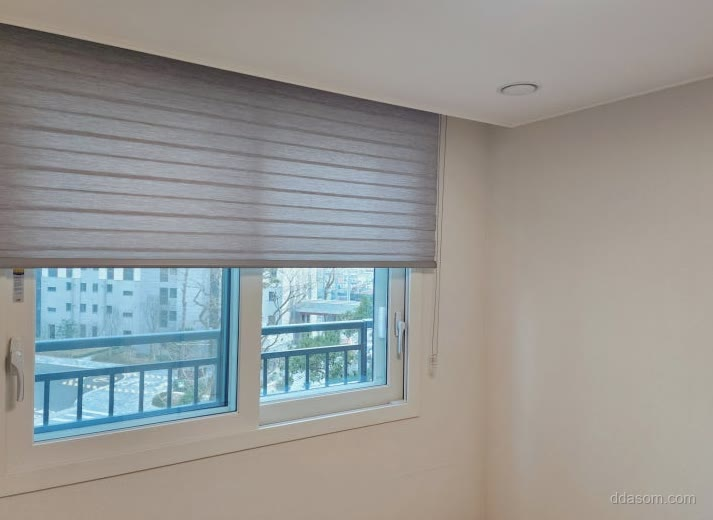

2026년 7월 18일 시공
울진 빌라
헤비쉬폰 커튼·콤비블라인드 시공후기

울진의 한 빌라, 거실과 안방·작은방까지 한 번에 시공한 댁입니다.
상담 때 고객님이 원하시는 그림이 뚜렷했습니다.
거실은 밝고 화사하게 살리고 싶다.
방들은 창밖 시선과 빛이 신경 쓰이니, 은은하게 가리면서 필요할 땐 조절되면 좋겠다.
공간마다 원하는 게 다르면, 저희는 제품도 나눠서 제안드립니다.
거실에는 헤비쉬폰 커튼을 골랐습니다.
일반 쉬폰보다 올이 촘촘하고 도톰한 원단이라, 한 겹만 달아도 비침이 적습니다.
빛을 막는 게 아니라 부드럽게 걸러주기 때문에, 낮에는 조명 없이도 거실이 화사합니다.
여기에 주름을 두 배로 잡는 두배나비주름으로 넉넉하게 시공했습니다.
한 겹 구성일수록 주름이 빈약하면 커튼이 없어 보이는데,
주름을 도톰하게 세우니 한 겹인데도 볼륨이 살아납니다.
볕이 드는 시간에는 주름 골마다 빛과 그늘이 번갈아 서면서, 원단의 결이 그대로 드러납니다.

안방과 작은방은 그레이 콤비블라인드로 통일했습니다.
콤비블라인드는 비치는 망사 띠와 비치지 않는 원단 띠가 번갈아 있는 구조입니다.
띠를 겹치면 은은하게 가려지고, 어긋내면 창밖이 트입니다.
시선이 신경 쓰일 땐 겹쳐두고, 답답할 땐 틔우고 —
시간대에 따라 골라 쓰시면 됩니다.
밖에서 안이 보이지 않게 해두면서 빛만 들이는 상태도 콤비라서 가능합니다.
색은 그레이로 잡아, 밝은 거실과 대비되는 차분한 톤으로 방을 가라앉혔습니다.
거실은 화사하게, 방은 차분하게 —
한 집인데 공간마다 표정이 달라졌습니다.
이 댁은 방마다 창 높이가 조금씩 달랐습니다.
빌라는 아파트보다 창 규격이 제각각인 경우가 많아, 이런 부분을 현장에서 하나씩 맞춰야 합니다.
그래서 브라켓 위치를 방마다 다시 잡았고,
마감 전에 블라인드를 하나씩 올렸다 내려보며 걸림 없이 작동하는지 확인하고 나왔습니다.
거실은 커튼, 방은 콤비블라인드.
공간 용도에 맞춰 제품을 나눈, 만족도 높은 시공이었습니다.